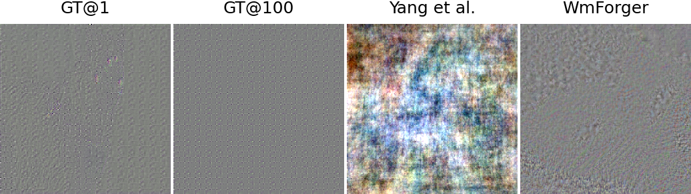
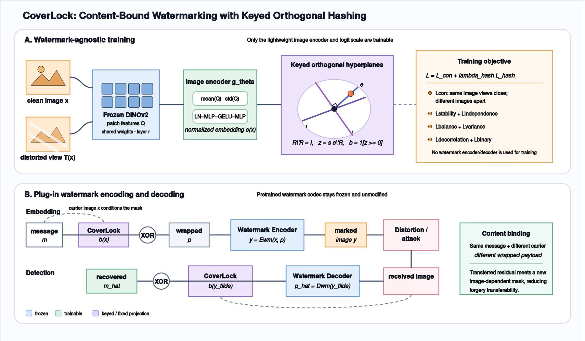

A cover-independent shortcut
High-RT systems learn watermark evidence that survives across unrelated images. Their decoders respond more to the message than to the image carrying it.
Neural watermark security
A watermark can leave its image behind and still be decoded elsewhere. We expose the architectural shortcut that makes this possible, then lock the payload back to its content.
01 / THE ATTACK
Residual-based forgery extracts watermark evidence from a released image and adds it to unrelated content. If the decoder barely depends on the cover, the transplanted signal still verifies.
02 / WHAT WE FOUND
Common training choices do not explain the enormous gap in transferability. The decisive difference is whether the network learns to keep watermark evidence coupled to image content.
High-RT systems learn watermark evidence that survives across unrelated images. Their decoders respond more to the message than to the image carrying it.
Keeping spatial image–message interaction through the encoder and delaying global pooling sharply reduces residual transfer.
When embedding patterns adapt to the input image, watermark evidence becomes harder to detach and reuse on a new carrier.
03 / ONE ATTACK, MANY FINGERPRINTS
Residual patterns change with the estimation procedure and source count. A detector trained to recognize one attack artifact can miss the next one. Content binding attacks the transferable signal itself.
Amplified residuals from MBRS; visualization scales are normalized for inspection.

04 / THE PLUG-IN DEFENSE
CoverLock derives a distortion-stable, image-conditioned code from frozen DINOv2 features. XOR wrapping makes the same user message become a different payload for every carrier image.

05 / RESULTS
Across CIN, MBRS, and VINE; COCO, ImageNet, and DIV2K; and three residual-based attacks, CoverLock keeps average attack success below 0.25%.
Average attack success rate
Average attack success rate
Average attack success rate
Average bit accuracy under six image distortions on COCO. CoverLock consistently outperforms traditional media-hash binding.
06 / READ & REPRODUCE
The paper contains the full RT protocol, controlled architectural interventions, security calibration, and cross-dataset evaluation.
@misc{dong2026residual,
title = {Residual Transferability in Neural Image Watermarking},
author = {Dong, Ziping and Li, Qi and Wang, Xinchao},
year = {2026},
eprint = {2609.32241},
archivePrefix = {arXiv},
primaryClass = {cs.CR},
url = {https://arxiv.org/abs/2609.32241}
}